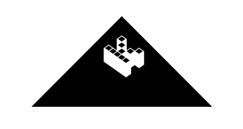

About Me
Hello! I'm Dustin Christlieb, a Sr. Cloud Architect at DoiT International. I specialize in optimizing productivity and security within Google Workspace and other cloud environments, helping organizations unlock the full potential of their digital workspace. My passion lies in architecting robust cloud solutions and assisting administrators in navigating the complexities of their enterprise technology.
I thrive on problem-solving and continuously seek innovative ways to enhance security, efficiency, and user experience. My expertise is backed by key certifications, including the Google Cloud Professional Cloud Architect, Professional Workspace Administrator, and Professional Chrome Enterprise Administrator. My broader technical skills include Google Workspace Administration, Cloud Security, Scripting (GAM, Apps Script), Identity Management (IAM), Governance Risk and Compliance (GRC), and Mobile Device Management (MDM).
Beyond my professional work, I'm an avid enthusiast of privacy tech, a long-time gamer, and a science fiction aficionado. I also love sharing my knowledge and teaching others about the new technologies I'm using. Check out my GitHub profile for more projects and code samples.
Featured Projects
DoiT AdminPulse for Workspace
A tool by DoiT designed for Google Workspace Administrators to audit and improve their domain's security posture based on best practices. Built to simplify security management.

Technologies: Google Cloud Platform, Apps Script, Google Sheets, AdminSDK, and Policy API.
Visit AdminPulse View CodeExplore more of my general work on GitHub.
Certifications
Education
-
Bachelor of Science (B.S.), Information Technology Western Governors University July 2025 - Dec 2025 (Expected)
-
Associate in Applied Science (A.A.S.), Cyber Security Operations Glendale Community College January 2019 - May 2023
Let's Connect
Find me on the web:
